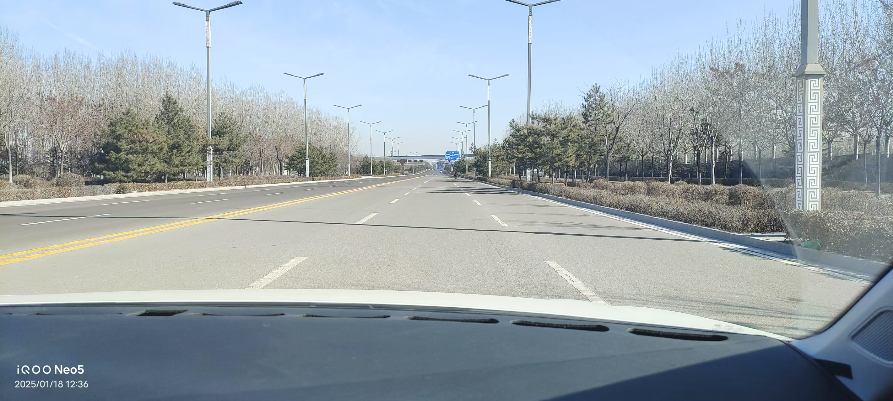
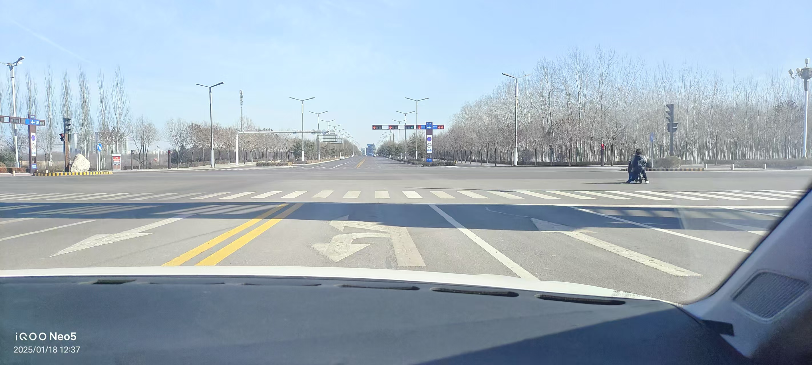
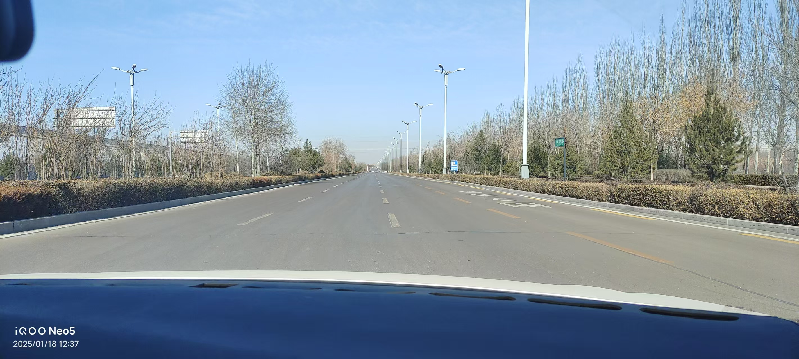
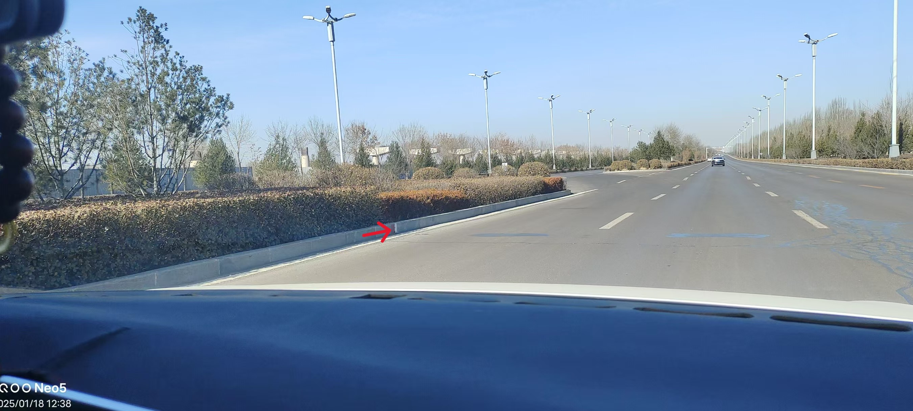
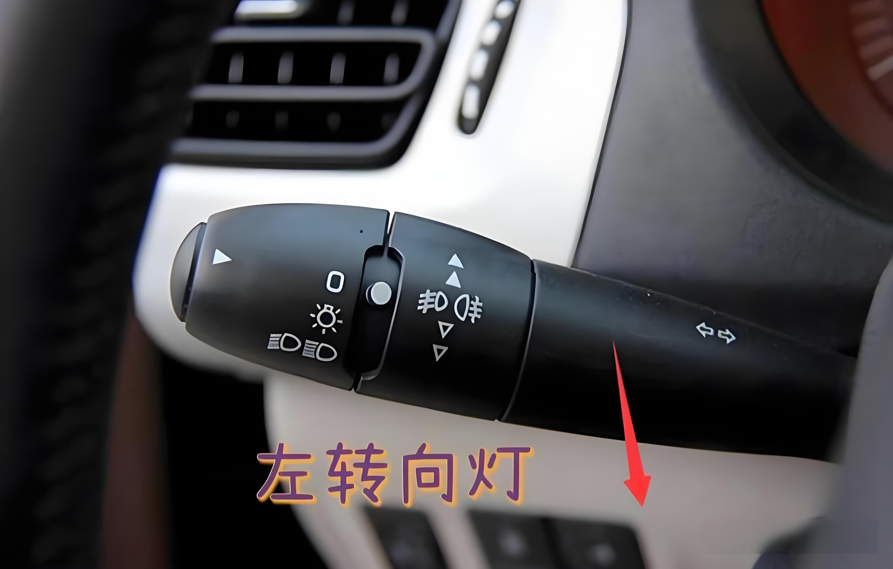
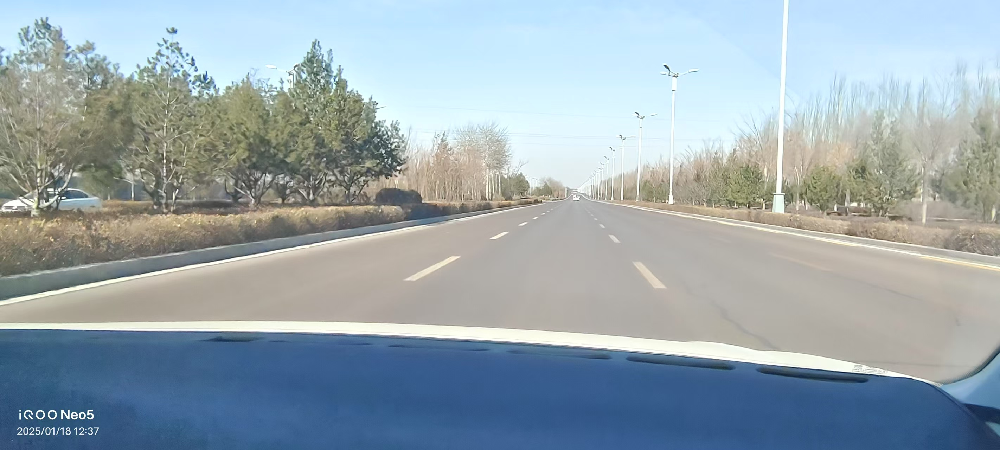
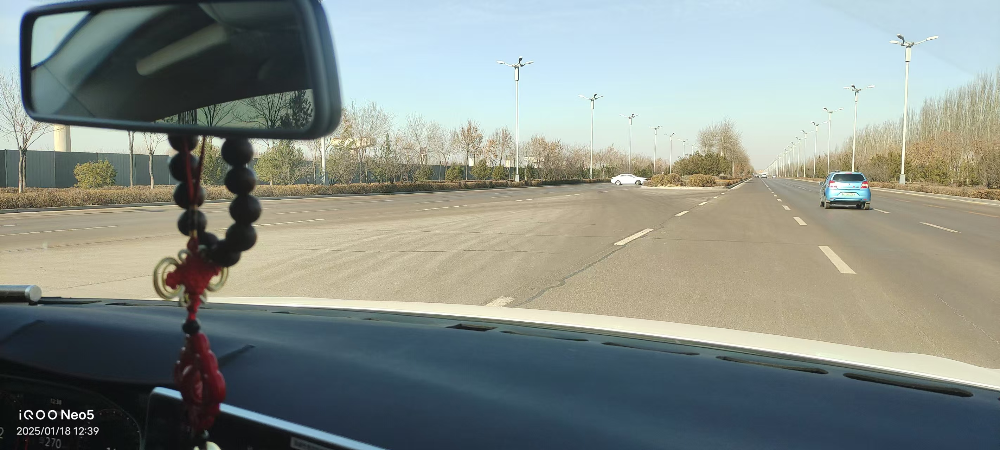
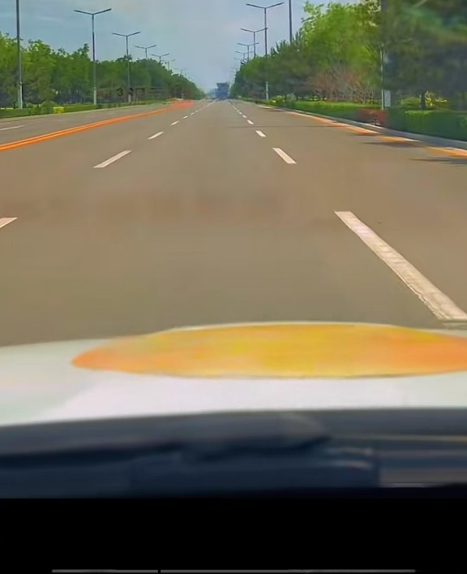
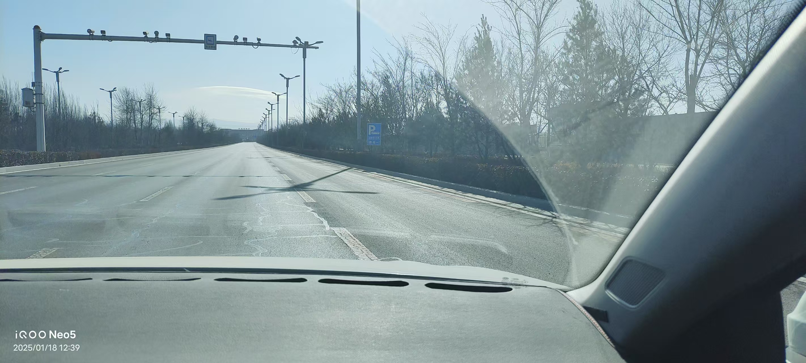
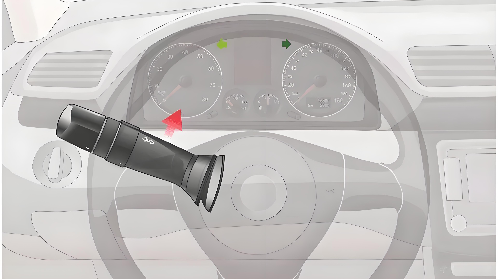

2：语音播报(请保持直线行驶)，将速度提升为15-20码之间
注：起步到移至车道为10秒 速度不可高于20 转向灯需开启5秒后才能动方向盘 听到项目结束关闭转向灯

3：语音播报(前方路口左转)，打开左转向灯，斑马线踩刹车,
路过图二突出位置，方向盘向左调整
注：当为红灯时，只需踩一次刹车，停车即可
当为绿灯时，需点几次刹车 听到项目结束关闭转向灯


4：当车身转向后，将车行驶至中间车道，速度15-20，如图

5：路过图中位置前5米，需点几次刹车

6：语音播报(请超越前方车辆),开启左转向灯，提速20-30码之间
微调方向5秒后变更至左侧车道,然后再次切换右转向灯，5秒后将车开回原车道，并减速
注：超车速度不可小于20码 指针将20码全部露出 车速稳定 超车完成后需减速15-20 项目结束关闭转向灯
 
7：语音播报(请选择合适地点掉头)，踩刹车，走到图1中第二个虚线开始左打方向，并观察右方是否有车，将车移步到右一车道，如图2

8：语音播报(与机动车会车),右脚到刹车位置，将方向盘向右微调，车身在右方，如图所示
注：回车全程不踩油门 方向不可大幅度调整 确保车身在右方虚线内行驶 当语音播报项目结束，提速15-20

9：路过图中公交站台标识前5米处需点几次刹车

10：路过图中人行横道标识前5米处需点刹车几次

11：语音播报(前方请变更车道),开启右转向灯，5秒后变更到图中道路
注：听到项目结束关闭转向灯
 12：图中第二个虚线开始左打方向，并观察右方是否有车，将车移步到右二车道
12：图中第二个虚线开始左打方向，并观察右方是否有车，将车移步到右二车道 注：当右方来车，需停车等待
注：听到项目结束关闭转向灯

12：语音播报(前方路口左转),开启左转向灯，慢速通过，将车开到图二车道
注：当为红灯时，只需踩一次刹车，停车即可
当为绿灯时，需点几次刹车 听到项目结束关闭转向灯

 14：当走到图中位置前5米处 需点刹车几次
14：当走到图中位置前5米处 需点刹车几次 
15：当走到图中位置，刹车减速，左右观察，当车身走过斑马线，<自主变道>最右车道

11：语音播报(请超越前方车辆),开启左转向灯，提速20-30码之间，微调方向5秒后变更至左侧车道
注：超车速度不可小于20码 指针将20码全部露出 车速稳定 超车完成后需减速15-20 项目结束关闭转向灯

12：当车行驶在左侧车道，立即开启右转向灯，5秒后驶回右侧车道，并减速，保持速度15-20之间，关闭转向灯


13：当走到图中位置前5米处 需点刹车几次

14：语音播报(请靠边停车),开启右转向灯，踩刹车慢行找图中点位与显示屏D重合